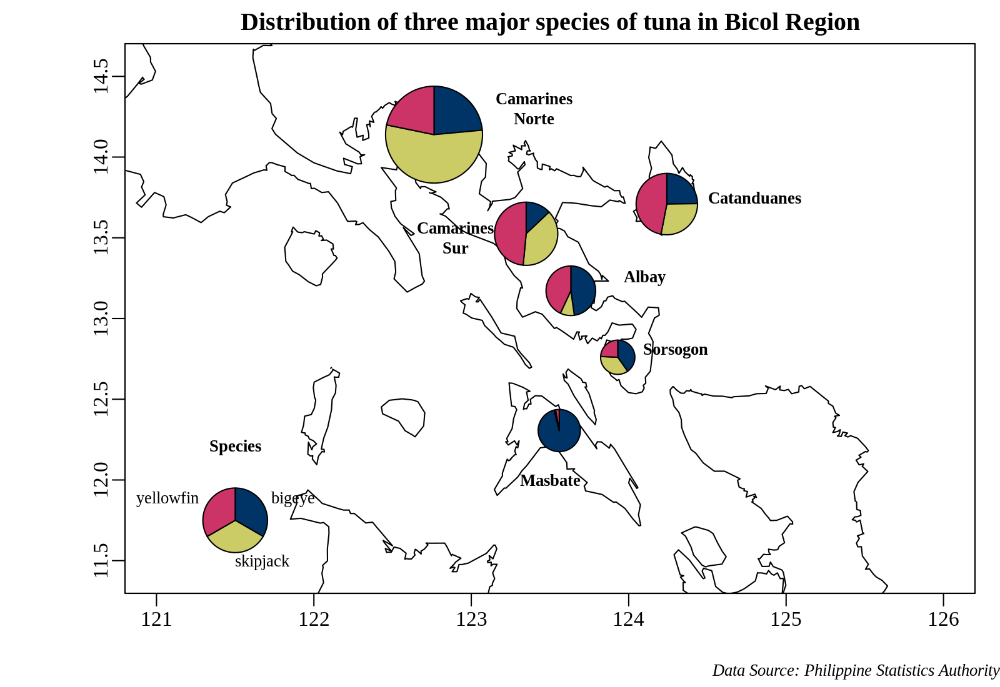

library(mapdata)
library(mapplots)
library(data.table)Create pie charts that show the composition of tuna landed catch on a map in R
2019-09-21: I recently revisited this post and attempted to recreate the plot using base R graphics, along with the mapplots and data.table packages for data manipulation.
On May 24-25, 2018, I attended the 9th WPEA-NSAP Tuna Catch Estimates Review Workshop in Ocean 101, Catangnan, General Luna (Siargao), Surigao del Norte. The workshop aimed to review the NSAP port sampling data collected in each region and compile information from BFAR regional offices for the annual catch estimates of tuna species.
One of the presentations I found interesting showed a map of fishing grounds in a region with a pie chart overlaid to show the landed catch composition of tuna. When I returned to the office, I tried to recreate the graph using the R language.
The data
I used data from the Philippine Statistics Authority (PSA), which is freely available on their website. I have pre-formatted the .csv file and made it available for download here.
I analyzed the tuna production of marine municipal fisheries in the six provinces of Bicol Region from 2015 to 2017. I focused on three species of tuna: bigeye tuna, skipjack tuna, and yellowfin tuna.
The process
To begin, let us load the needed packages.
Data manipulation
Let’s first examine our data before creating a graph.
municipal <- data.table::fread("municipal.csv", header = TRUE)
head(municipal) province species 2015 2016 2017
<char> <char> <num> <num> <num>
1: Albay Bigeye tuna 285.74 281.94 334.97
2: Albay Skipjack 3.24 54.83 114.55
3: Albay Yellowfin tuna 262.57 262.66 289.43
4: Camarines Norte Bigeye tuna 448.39 627.51 620.60
5: Camarines Norte Skipjack 1347.72 1381.78 1215.91
6: Camarines Norte Yellowfin tuna 713.83 474.89 382.25Next, we will create a new column that sums the values of the 2015, 2016, and 2017 columns. We will do this by summing the values in each row.
municipal[, total := rowSums(.SD), .SDcols = 3:5]
head(municipal) province species 2015 2016 2017 total
<char> <char> <num> <num> <num> <num>
1: Albay Bigeye tuna 285.74 281.94 334.97 902.65
2: Albay Skipjack 3.24 54.83 114.55 172.62
3: Albay Yellowfin tuna 262.57 262.66 289.43 814.66
4: Camarines Norte Bigeye tuna 448.39 627.51 620.60 1696.50
5: Camarines Norte Skipjack 1347.72 1381.78 1215.91 3945.41
6: Camarines Norte Yellowfin tuna 713.83 474.89 382.25 1570.97Now, we will only select the province, species, and the total columns.
municipal <- municipal[, .(province, species, total)]We will convert the data to a wide format to add the coordinates, and then convert it back to long format. (I am still unsure of the easiest way to do this.)
# Convert to wide format
municipal_wide <- dcast(municipal, province ~ species, value.var = "total")
# Add the coordinates of each province
municipal_wide[, `:=` (lon = c(123.632377, 122.763304, 123.348615, 124.242160, 123.558856, 123.930399),
lat = c(13.171977, 14.139026, 13.525020, 13.708868, 12.306024, 12.759986))]
# Then convert back to long format
municipal <- melt(municipal_wide, id.vars = c("province", "lon", "lat"))
head(municipal) province lon lat variable value
<char> <num> <num> <fctr> <num>
1: Albay 123.6324 13.17198 Bigeye tuna 902.65
2: Camarines Norte 122.7633 14.13903 Bigeye tuna 1696.50
3: Camarines Sur 123.3486 13.52502 Bigeye tuna 397.27
4: Catanduanes 124.2422 13.70887 Bigeye tuna 716.94
5: Masbate 123.5589 12.30602 Bigeye tuna 1314.28
6: Sorsogon 123.9304 12.75999 Bigeye tuna 362.89The pie charts above the map
We will use the function draw.pie from the mapplots package. The documentation for this can be found at https://rdrr.io/cran/mapplots/man/draw.pie.html.
The final output is shown below:

Camarines Norte has the highest tuna landing among the Bicol provinces, with skipjack tuna (Katsuwonus pelamis) as the dominant species. Yellowfin tuna (Thunnus albacares) is the dominant species in Camarines Sur and Catanduanes, while bigeye tuna (Thunnus obesus) is the dominant species in Masbate.
I hope this is helpful!
The code to generate the plot
# The area of the Bicol Region;
xlim <- c(122, 125)
ylim <- c(11.5, 14.5)
# Creates an xyz object for use with the function draw.pie
xyz <- make.xyz(municipal$lon, municipal$lat, municipal$value, municipal$variable)
# Colors used
col <- c("#003366", "#CCCC66", "#CC3366")
# The plot of the pie chart above the map
tiff("pie-on-map.tiff", width = 8, height = 5.5, units = "in",
res = 200, type = "cairo")
par(mai = c(0.5, 0.5, 0.35, 0.2), omi = c(0.25, 0.5, 0, 0),
mgp = c(2.5, 0.5, 0), family = "Liberation Serif")
basemap(xlim = c(121, 126), ylim = c(11.5, 14.5), bg = "white",
main = "Distribution of three major species of tuna in Bicol Region")
map('world2Hires', xlim = xlim, ylim = ylim, add = TRUE)
draw.pie(xyz$x, xyz$y, xyz$z, radius = 0.3, col = col)
legend.pie(121.5, 11.75, labels = c("Bigeye", "Skipjack", "Yellowfin"),
radius = 0.2, bty = "n", col = col, cex = 0.8, label.dist = 1.3)
text(121.5, 12.1, "Tuna Species:", cex = 0.8, font = 2)
text(123.4, 14.3, "Camarines\nNorte", cex = 0.8, font = 2)
text(124.8, 13.75, "Catanduanes", cex = 0.8, font = 2)
text(122.9, 13.5, "Camarines\nSur", cex = 0.8, font = 2)
text(124.1, 13.25, "Albay", cex = 0.8, font = 2)
text(124.3, 12.8, "Sorsogon", cex = 0.8, font = 2)
text(123.5, 12, "Masbate", cex = 0.8, font = 2)
mtext("Data Source: Philippine Statistics Authority", side = 1, outer = TRUE,
adj = 1, cex = 0.8, font = 3)
dev.off()